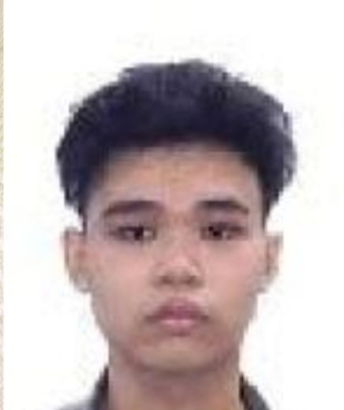

My name is Soo Mun Hong
I am a student at University of New Era
I am currently in my Bachelors in Computer Science program

🎓 My Journey
My academic journey in Computer Science has been an exciting exploration of technology and problem-solving. I chose this field because I've always been fascinated by how software shapes our daily lives and wanted to be part of creating innovative solutions. Throughout my program at the University of New Era, I've enjoyed learning about various aspects of computing, from programming fundamentals to more advanced concepts. Each project and assignment has helped me grow as a developer and gain valuable hands-on experience.
🚀 My Goals
Looking ahead, my career goal is to become a software engineer specializing in website design. I'm passionate about creating beautiful, functional, and user-friendly websites that provide excellent user experiences. Long-term, I aspire to work on meaningful projects that make a positive impact, continuously learn new technologies, and eventually lead teams to develop innovative web solutions that push the boundaries of what's possible online.
⚡ My Hobbies
In my free time, I enjoy building websites as a hobby, constantly experimenting with new design trends and technologies. When I'm not coding, I stay active with fitness activities, which help me maintain a healthy work-life balance and keep my mind sharp for tackling programming challenges.